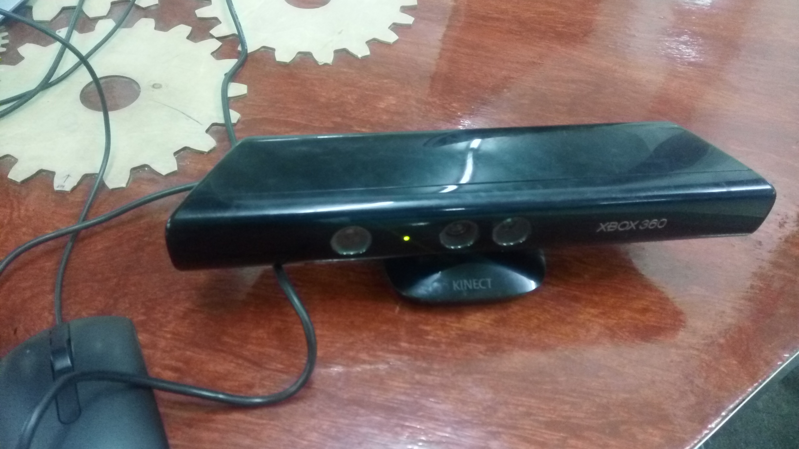
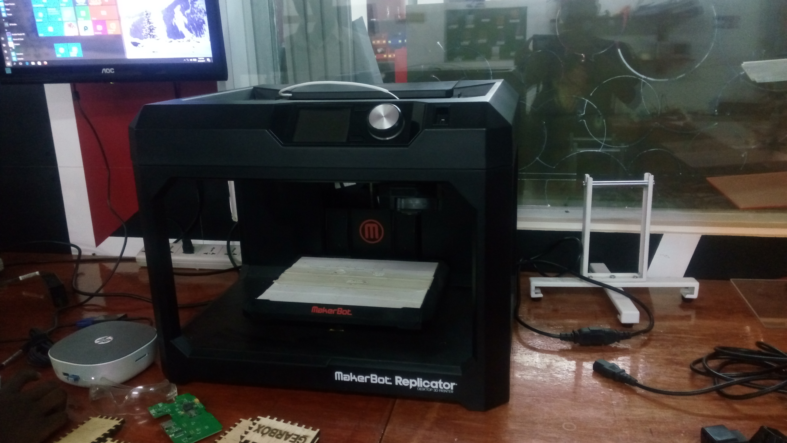
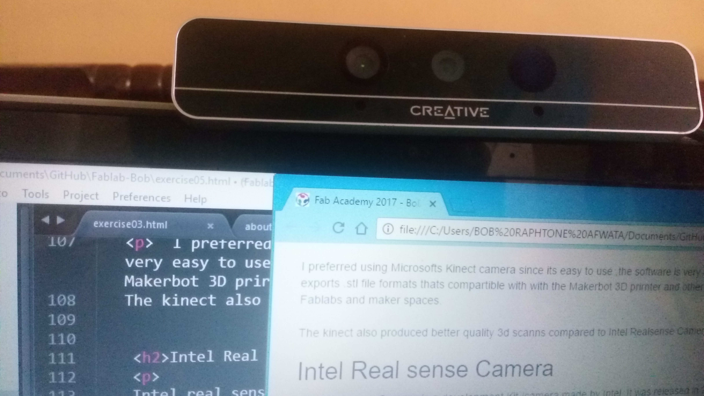
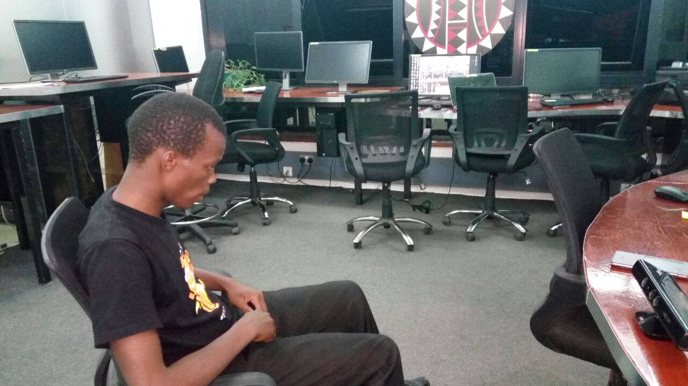
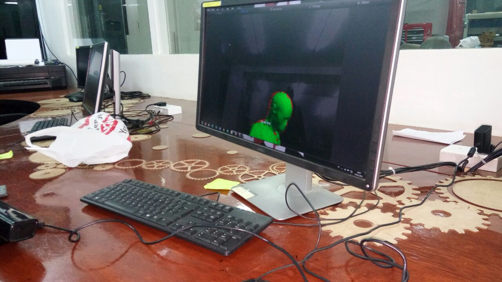
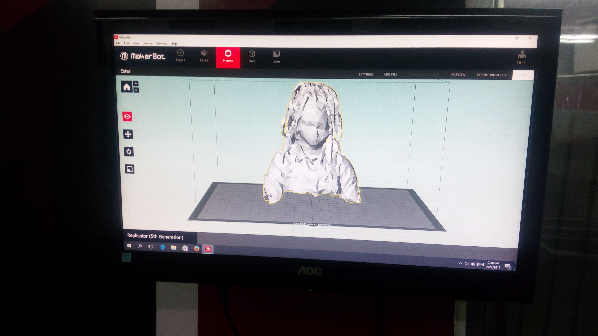
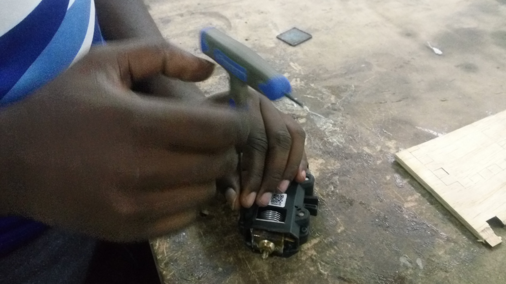
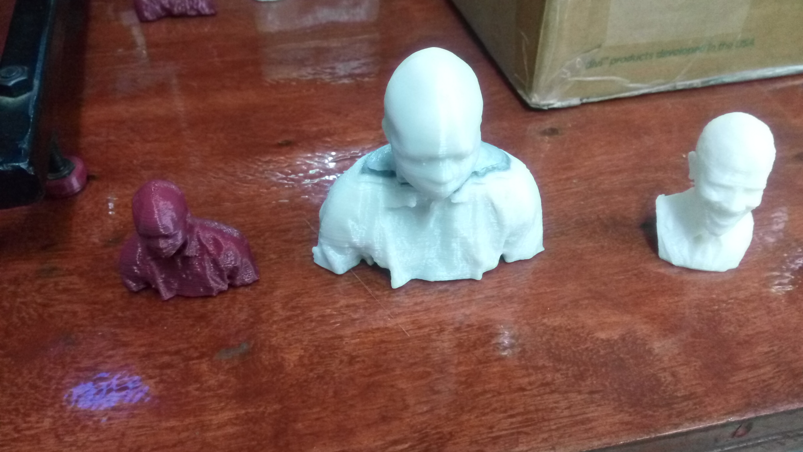

In this week i will demostrate how I scanned 3D objects using a 3d camera ,and finally 3D print the object . I chose a Kinect 360 camera made by Microsoft .
Other Cameras That I tried out or which are available in My lab includes intels Real Seanse Camera made by Intel corporation
Kinect Camera is an easy to use Camera ,Although its expensive ,It can do a wide variety of things including bieng used to take images ,3d images for your Projects as well as bieng used as an input for your various Desktop Games.
For this week I used the following free Softwares that works with the various Cameras and 3d printers .Note that each Camera and printer has its freely downloadable Software from the manufactures Websites
1) Microsoft Kinect 360 Camera
2) Real Sense Camera
3) Maker bot 3D printer


I preferred using Microsofts Kinect camera since its easy to use ,the software is very easy to use and it also exports .stl file formats thats compartible with with the Makerbot 3D prirnter and other printers found in most Fablabs and maker spaces.
The kinect also produced better quality 3d scanns compared to Intel Realsense Camera.
Intel real sense Camera is a development Kit /camera made by Intel ,It was released in 2013 but was available for developers to use in in making desktop games ,am=nimations ,in robotics,drones etc .In conjuction withoter INtel technologies such as itel galileoe and edison ,Real sense camera has been used alot to make great drones with 3d image analysis etc
Some interesting features of the Camera include depth analysis .It has sesnsors that are used to measure depth or how far an object or image is from the camera . I will demosstrate how to use this camera to measure depth as well as scanning of various 3d objects and previewing it using a web browser.

After downloading and instslling the Kinects Software one needs to follow the following steps to ensure excellent quality Scans of the Images .
1) Step 1 -Plug In the Camera to the power using Its adapter .Also plug in the usb cable to your Laptop.
2) Start the software and browse to the Scan tab in the top


Here I will demonstrate how to use the Kinect camera to process the Image Scans and produce a .stl file thats can easily be 3 D printed with a makerbot 3D printer in our lab.

During the 3d printing I came across several challanges of extruder failing ,getting clogged and also the printer bed misaligned. I had to solve these issues by removing the extruder from the machine,disassbling and removing the clogs and finally reassebling it back.

Finally after lots of trouble shooting I managed to 3D print the images on the makerbot .The quality of the 3D printing was ok and impressive .Below are the Images of what I printed out

In order to ensure our printer worked fine ,Together with Frank we carried out various tests that Include ,Calibrating the printer,Changing the fineness of the prints
Youtube Videos of my Scans and 3d printing here.